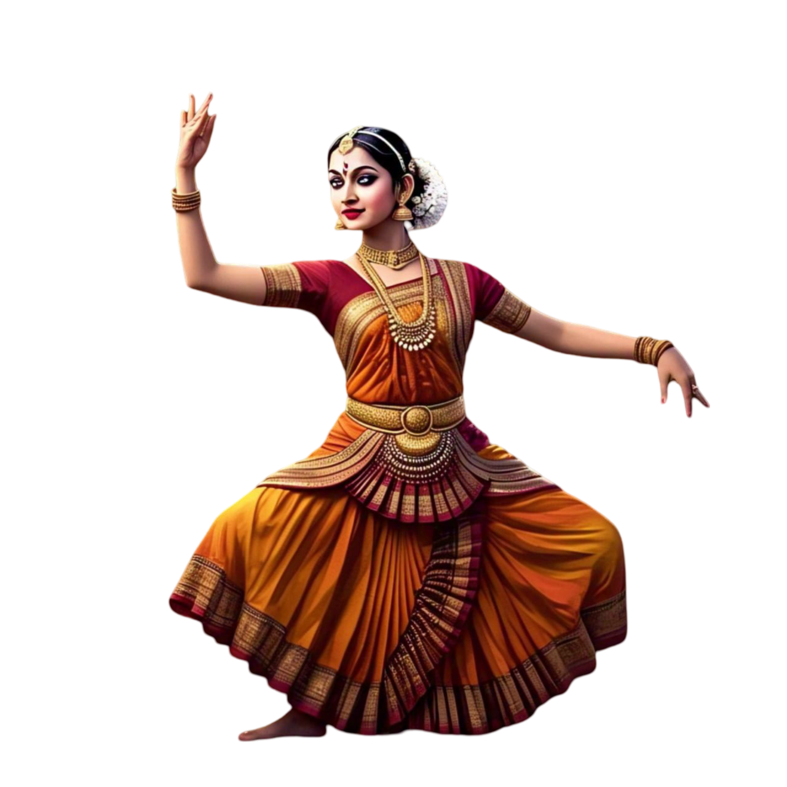
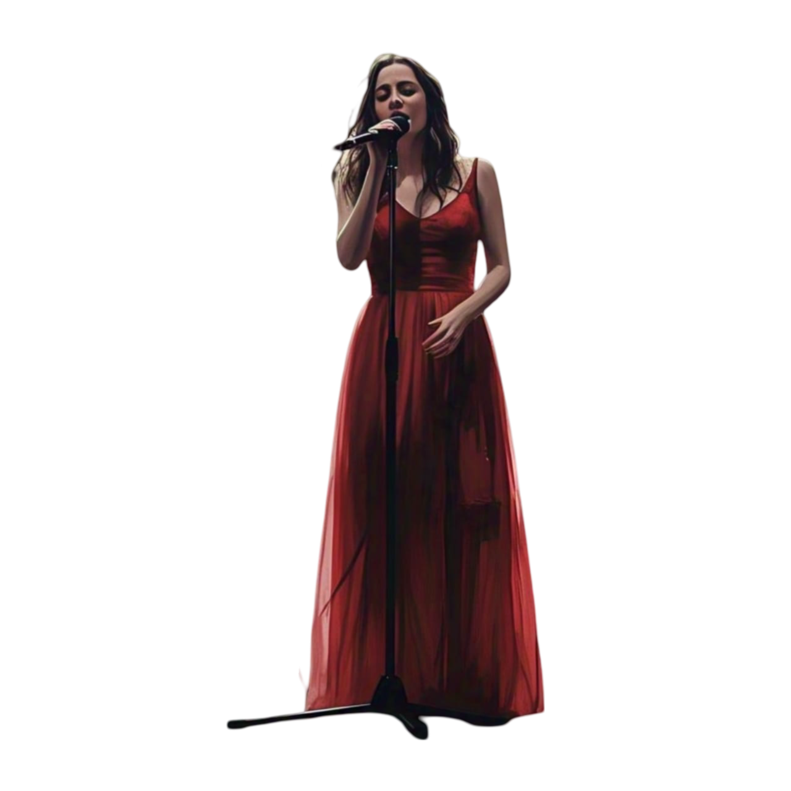
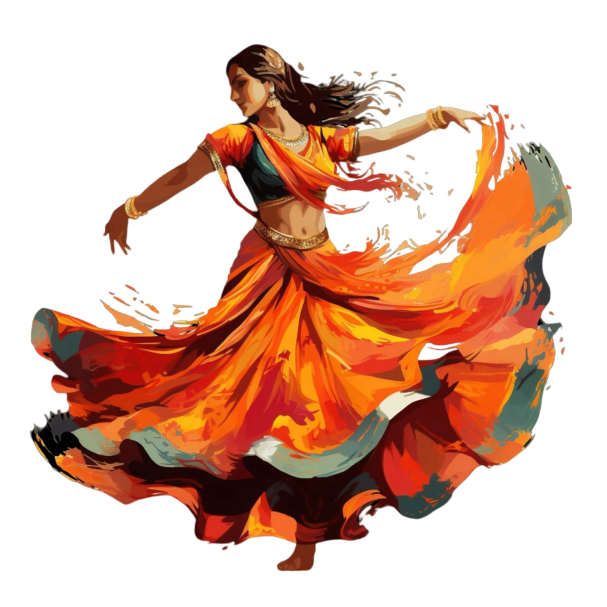

Clasical Perfomance
Classical Perfomance
Classical performance refers to traditional art forms rooted in historical and cultural heritage, such as classical music and dance. In music, it includes compositions by renowned figures like Mozart, Beethoven, and Indian maestros like Ravi Shankar. Classical dance forms, like Bharatanatyam or ballet, emphasize precision, discipline, and storytelling through movement. These performances require rigorous training and deep knowledge of the form. Classical arts continue to be preserved and celebrated through concerts, festivals, and academic study.
Western Perfomance
Western Perfomance
Western performance refers to stage arts that originate from Western cultures, including theater, dance, and music. It encompasses genres like ballet, opera, Broadway musicals, and contemporary Western music concerts. Performers focus on storytelling, expression, and technical precision, often using elaborate stage setups and costumes. Western performance styles have evolved over centuries, influenced by history and innovation. They are widely popular in global entertainment, from Hollywood productions to live concerts and theatrical plays.

Singing
Singing
Singing is the vocal expression of music, performed with or without instrumental accompaniment. It can range from classical opera to pop, jazz, and rock, each requiring different vocal techniques and styles. Singing allows artists to convey emotions, stories, and messages through melody and lyrics. Proper training in breath control, pitch, and vocal modulation enhances a singer’s performance. Whether in solo performances, choirs, or concerts, singing remains a universal form of artistic expression.

Semi-classical
Semi-classical
A semi-classical performance blends elements of classical music and dance with contemporary or folk influences. It retains the depth and structure of classical forms but allows for creative improvisation. This style is common in Indian music and dance, such as Thumri, Dadra, and Kathak-based performances. Semi-classical performances are often more accessible to audiences unfamiliar with strict classical traditions. They showcase technical skill while maintaining entertainment value and emotional appeal.

Music Band
Music Band
A music band is a group of musicians who perform together, typically playing instruments and sometimes incorporating vocals. Bands can belong to various genres, including rock, jazz, pop, metal, and blues. Each band member contributes to the overall sound, playing instruments like guitars, drums, keyboards, or brass. Collaboration and harmony are key aspects of a successful band. Live performances, recordings, and tours help bands connect with their audience and build their musical identity.